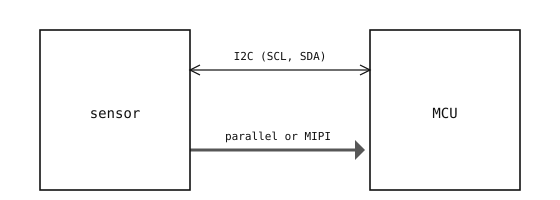

4.9. 感測器匯流排¶
相機感測器與其通訊的 MCU 會在兩條不同的匯流排上交換兩種不同類型的資料。
4.9.1. 控制匯流排¶
每一項感測器設定都儲存在晶片上的某個暫存器中——像素格式、影格大小、曝光時間、增益、白平衡增益、自動控制目標值等等。MCU 透過 I2C 匯流排 讀寫這些暫存器（部分感測器則改用 SPI）。兩條線（SCL 與 SDA）將 MCU 的 I2C 周邊裝置連接到感測器的 I2C 介面，而使用者所選的每一項組態，都會由驅動程式轉譯為這條匯流排上的一次或多次暫存器寫入。
控制匯流排的運作速度相對寬鬆——通常為 100 kHz 或 400 kHz。設定一個暫存器需時數十微秒；重新組態整個感測器（一次重置、一個新的影格大小、一個新的像素格式）則需時數十至數百毫秒，主要是因為每次寫入暫存器後，晶片都需要片刻時間讓新模式進入穩定狀態。這些都不必跟上像素資料流的速度。
4.9.2. 像素資料匯流排¶
像素資料則經由一條獨立、更寬且快得多的匯流排離開感測器。其中有兩大主流家族。
並列（Parallel） 是兩者中較舊的一種。它使用八條或十條資料線傳輸像素位元，外加一個像素時脈（PCLK）、一個行有效訊號（HSYNC）以及一個影格有效訊號（VSYNC）。在每個時脈邊緣，資料線上會出現一個像素位元組；HSYNC 與 VSYNC 則告訴接收端每一列、每一影格從何處開始、何處結束。並列匯流排結構簡單，但吞吐量受限於 MCU 的接腳矩陣能多快地將資料時脈進來——高階情況下通常為 50 至 100 MHz 的像素時脈。
MIPI CSI-2——即行動產業處理器介面相機串列介面第 2 版（Mobile Industry Processor Interface Camera Serial Interface, version 2）——已在新型影像感測器上大致取代了並列介面。它以一對或多對差動通道（lane pair）傳輸像素，每對速率可達每秒數百百萬位元，接腳數較少、頻寬高得多且 EMI 較低。並列介面主要存續於舊有設計，以及那些憑藉其簡單性仍具優勢的較小型、較低速率元件上。

感測器與 MCU 在一條速度較慢的雙向 I2C 匯流排上交換控制資訊，並在一條較寬、較快的單向並列或 MIPI 匯流排上傳輸像素資料。¶
無論感測器使用哪一個家族，MCU 端都有一個固定功能的周邊裝置，負責接收傳入的像素並將它們寫入記憶體中的影格緩衝區。Python 程式碼從不直接驅動這條匯流排；它只在那個硬體填充完畢後讀取影格緩衝區。